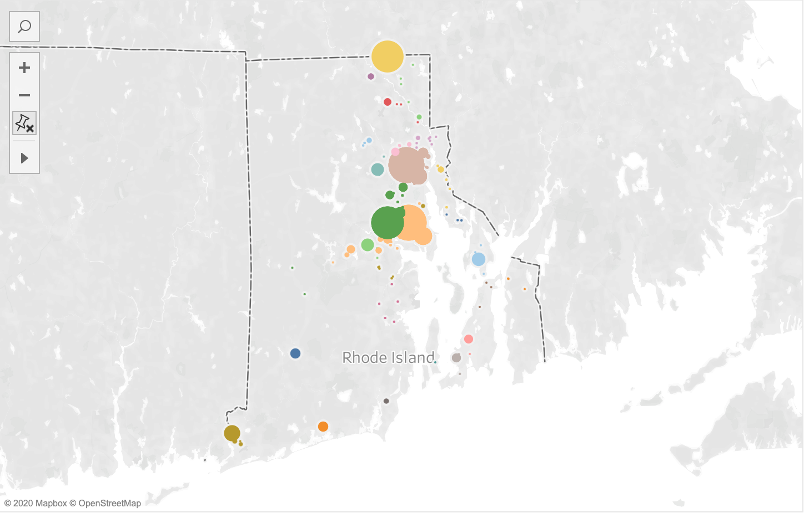
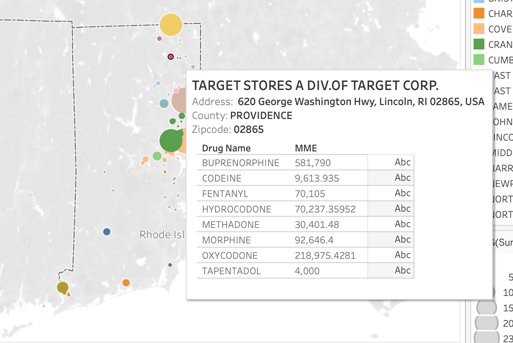
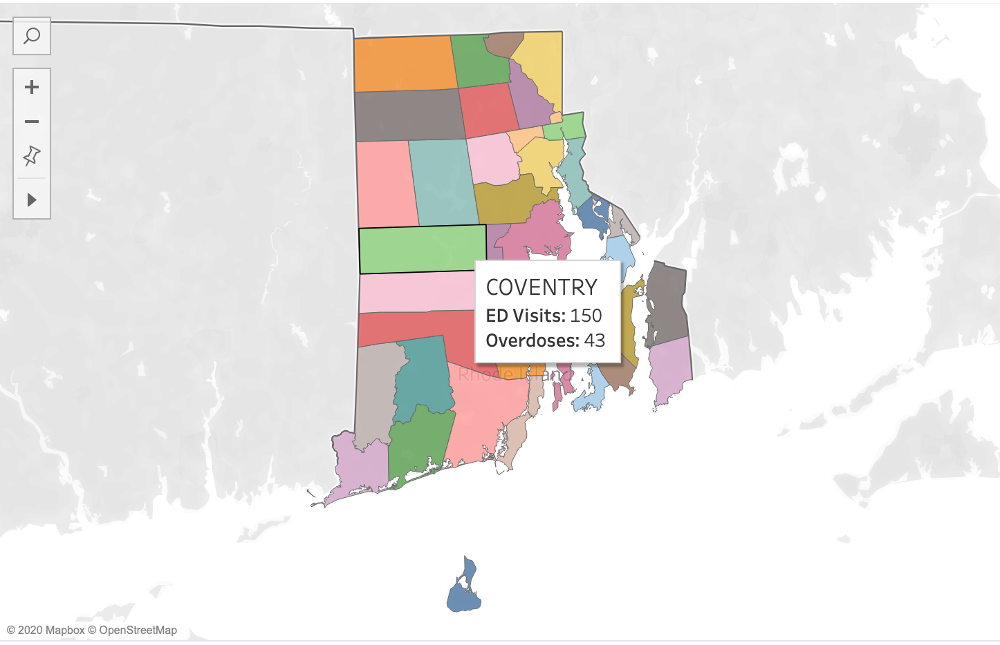
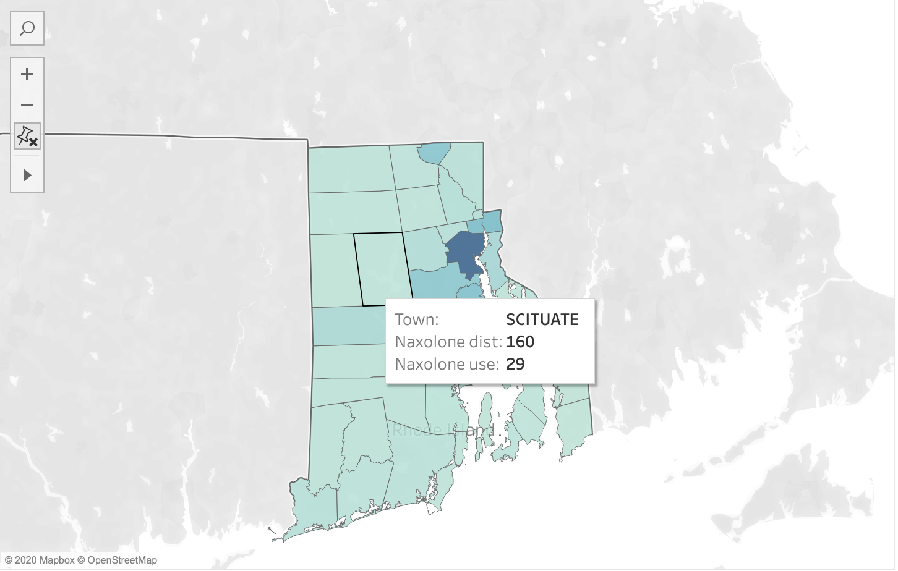

We obtained data from the DEA Opioid Prescription Dataset (ARCOS), which tracks the path of every single pain pill sold in the US from 2006-2014. After extensive cleaning, we've managed to create the following visualizations. We whittled the data down to transactions in which the BUYER_CITY (city in which the buyer was located) were all Rhode Island towns.
This graph depicts the number of emergency department visits, overdose deaths, and naloxone uses by town from the years 2016-2019. Some numbers in towns were recorded <5, and for the purposes of graphing, converted to 2.5. The graph shows that the highest numbers of ED visits, OD deaths, and naloxone use are recorded in Providence and the surrounding area, Pawtucket, Warwick, Woonsocket, and Cranston. The high density of cases are also reflected in West Warwick and East Providence.
The recorded peaks in Providence and the surrounding areas stay relatively stable over the years. Other towns, like Lincoln, West Warick, and Westerly experience a lot of fluctuation.



